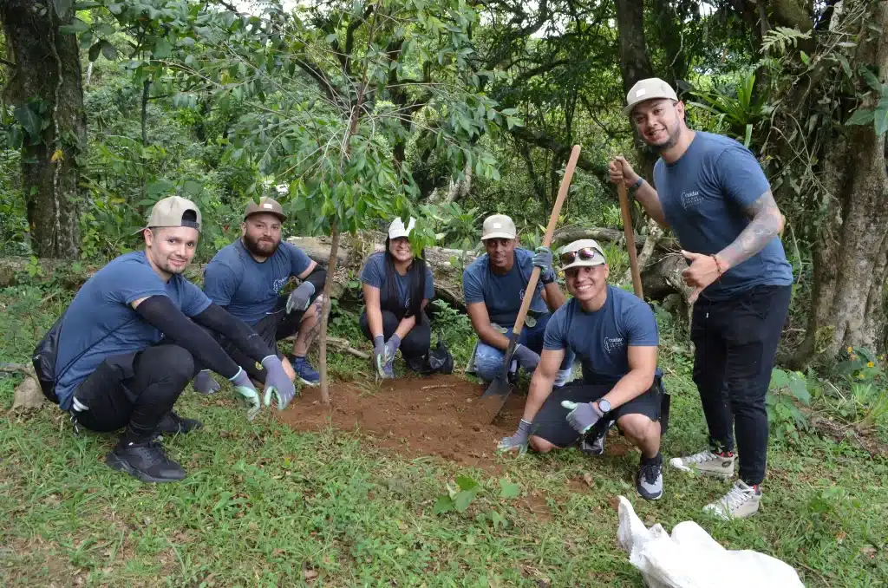
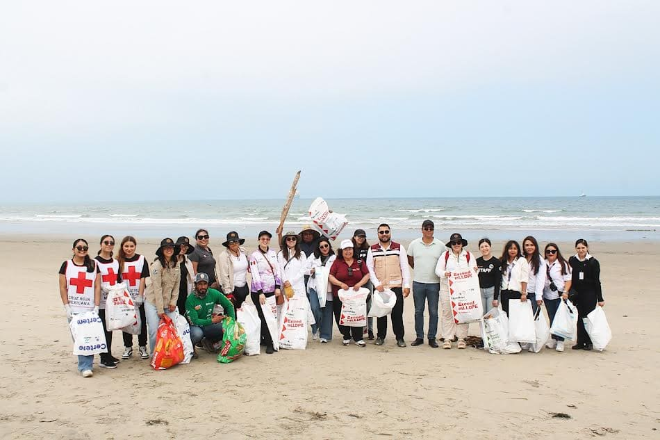
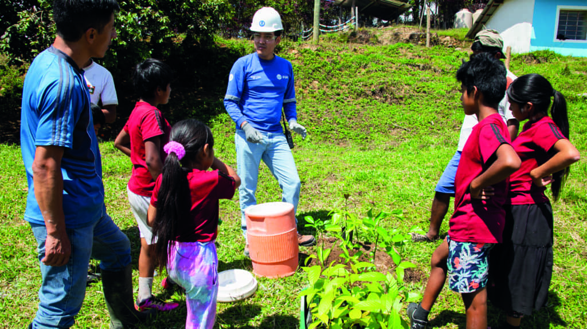

Proyecto: Pulmones Urbanos
Llevamos plantados más de 5,000 árboles autóctonos en zonas urbanas críticas, disminuyendo las islas de calor y mejorando activamente la calidad del aire para miles de ciudadanos.
Explora las iniciativas actuales en formato de blog y entérate de nuestro impacto.

Llevamos plantados más de 5,000 árboles autóctonos en zonas urbanas críticas, disminuyendo las islas de calor y mejorando activamente la calidad del aire para miles de ciudadanos.

Campañas masivas semanales de recolección de microplásticos y desechos artificiales en nuestras playas, salvando la fauna marina local y concientizando a los comercios zonales.

Talleres interactivos de huertas orgánicas escolares y compostaje en más de 30 instituciones educativas públicas, sembrando conciencia ecosostenible en las nuevas generaciones.